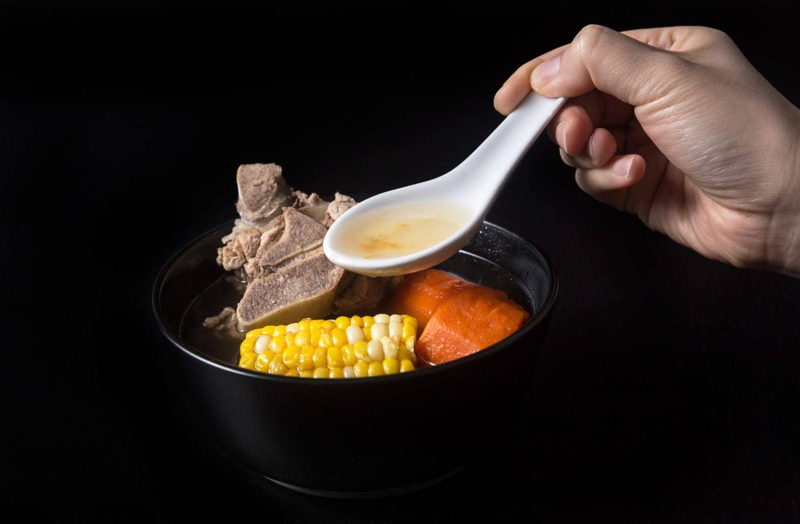

Chinese Pork Bone Soup is aromatic, easy, nutritious and very good for you. It is naturally sweet from the corn and carrots whilst having a very umami-rich flavour profile. This profile can only be achieved through, like many things in life having a long and slow process.
This recipe is taken from the good fellows at Casually Peckish, whilst their ad amount is more digestable unfortunately their content is all over the place. There are hints and steps that are featured in the description that isn't included in the recipe so the user has to constantly scroll back and forth to get the whole context.
The link to the original recipe is: Here